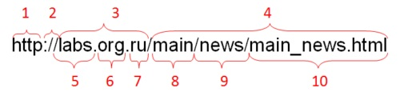
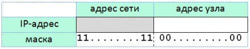
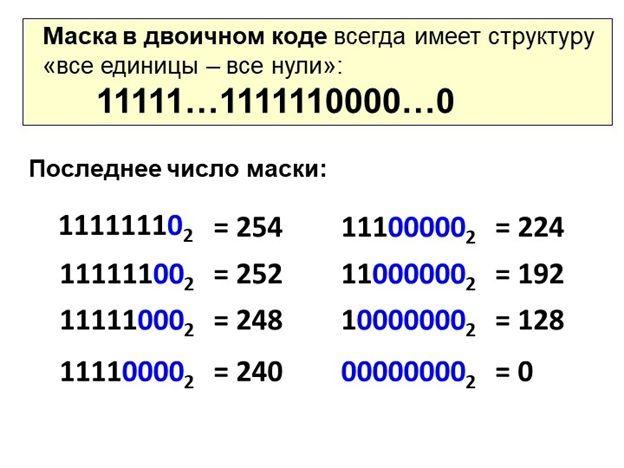
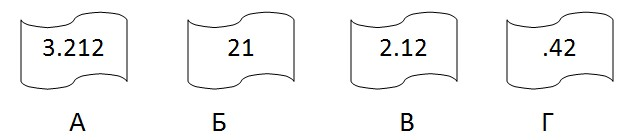
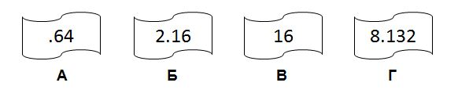
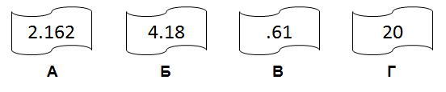
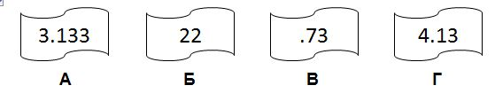

Двоичное кодирование. Адресация в сети Internet. Решение задач.
Цели
- Изучить способы адресации в сети Интернет;
- Научить определять IP-адрес;
- Научиться осуществлять поиск информации о компьютере по его IP-адресу;
- Научить учащихся определять адрес сети;
- Осуществить подготовку к ВПР и ЕГЭ.
Инструменты:
- ОС Windows
- Калькулятор
- Браузер
Задание 1. Запишите в конспекте основные понятия
Адрес документа в Интернете (с английского — URL — Uniform Resource Locator)
Протокол
передачи данных; может быть:

Где:
1.
имя
протокола сетевой службы – определяет тип сервера HTTP
(протокол
передачи гипертекста)
(встречается также защищенный протокол https);
2.
разделитель
в виде символа двоеточия и двух символов Slash ://;
3.
полное
доменное имя сервера;
4.
путь
поиска web-документа на компьютере (или IP-адрес);
1.
имя
web-сервера;
2.
домен
верхнего уровня «org»;
3.
имя
национального
домена «ru»;
4.
каталог
main на
компьютере;
5.
каталог
news в
каталоге main;
6.
конечная
цель поиска –
файл main_news.html.
Сетевые адреса
Физический
адрес или MAC-адрес – уникальный адрес,
«вшитый» на производстве
— 48-битный код сетевой карты (в 16-ричной системе):
00-17-E1-41-AD-73
Адресация
в Интернете • IP-адрес – уникальный
номер компьютера в сети. Состоит из 32 битного числа, разделённых
точками на
группы по 8 бит. 11000000. 10101000. 011001000101 192. 168. 100. 69 состоящий из: номер
сети + номер компьютера в сети (адрес узла)
Классы
IP-адресов
Класс
А (1 - 126) – 1 байт – номер сети, 3 байта
– номер узла. 92. 126. 30. 0
Класс
B (128 -191) – 2 байта – номер сети, 2
байта – номер узла. 110. 126. 30. 0
Класс
С (192 – 223) – 3 байта – номер сети, 1
байт – номер узла. 220. 126. 30. 0
Маска подсети:
Маска
подсети В терминологии сетей TCP/IP маской сети или маской подсети
называется двоичное число, определяющее, какая часть
IP-адреса узла сети относится к адресу сети, а какая - к адресу самого
узла в этой сети.
Например, узел с IP-адресом 12. 34. 56. 78 и маской подсети 255. 0. 0
находится в сети 12. 34. 0. 0. Чтобы получить адрес сети, зная IP-адрес
и маску
подсети, необходимо применить к ним операцию поразрядной конъюнкции
(логическое
И).
Например,
в случае более сложной маски:
IP-адрес:
00001100 0010 00111000 01001110 (12.
34. 56. 78)
Маска
подсети: 11111111
11100000 (255. 224. 0)
Адрес
сети:
00001100 00100000 (12. 34. 32. 0)
·
необходима для
определения того, какие компьютеры находятся в той же подсети;
255.255.255.0
-> FF.FF.FF.0
·
маска
в двоичном коде всегда имеет структуру: сначала все единицы, затем все
нули:
1…10…0

Та часть
IP-адреса, которая соответствует битам маски равным единице, относится
к адресу
сети, а часть, соответствующая битам маски равным нулю – это
числовой адрес компьютера
Таким образом, можно определить каким может быть последнее число маски:

Пример
1.
|
A |
.net |
|
Б |
ftp |
|
В |
:// |
|
Г |
http |
|
Д |
/ |
|
Е |
.org |
|
Ж |
txt |
Доступ
к файлу ftp.net
, находящемуся на сервере txt.org, осуществляется
по протоколу http.
В таблице фрагменты адреса файла закодированы буквами от А до Ж.
Запишите
последовательность этих букв, кодирующую адрес указанного файла в сети
Интернет.
Решение:
При
записи адреса
файла в интернете сначала указывается протокол, затем ставится
последовательность символов ://, затем имя сервера,
затем символ /,
и лишь потом имя файла: http://txt.org/ftp.net.
Ответ:
ГВЖЕДБА
Пример
2.
Восстановление
IP-адресов
Петя
записал IP-адрес
школьного сервера на листке бумаги и положил его в карман куртки.
Петина мама
случайно постирала куртку вместе с запиской. После стирки Петя
обнаружил в
кармане четыре обрывка с фрагментами IP-адреса. Эти фрагменты
обозначены
буквами А, Б, В и Г. Восстановите IP-адрес. В ответе укажите
последовательность
букв, обозначающих фрагменты, в порядке, соответствующем IP-адресу.

Решение:
IP-адрес
представляет
собой 4 числа, разделенные точками, причем эти числа не больше 255.
Посмотрим
внимательнее
на данные фрагменты: под буквой Г мы видим «.42».
Так как числа в IP-адресе не
могут быть больше 255, мы не можем ничего дописать к этому числу, а
фрагментов,
начинающихся с точки, больше нет, следовательно, этот фрагмент
– последний.
На
фрагменте под
буквой Б число без точек, значит, это либо последний фрагмент, либо
первый.
Место последнего фрагмента уже занято, значит фрагмент Б первый.
В
конце фрагмента А -
число 212, отделенное точкой, значит за фрагментом А должен следовать
фрагмент,
начинающийся с точки. Значит, фрагмент А идет перед фрагментом Г.
Ответ:
БВАГ
Пример
3. Определение
адреса сети
Посмотрите видео. Сделайте запись решения примера по видео
.
Попробуйте решить задачу самостоятельно. Запишите вопосы, если не получасеься решить задачу самостоятельно.
В
терминологии сетей
TCP/IP маской сети называется двоичное число, определяющее, какая часть
IP-адреса узла сети относится к адресу сети, а какая - к адресу самого
узла в
этой сети. Обычно маска записывается по тем же правилам, что и
IP-адрес. Адрес
сети получается в результате применения поразрядной конъюнкции к
заданным
IP-адресу узла и маске.
По
заданным IP-адресу
узла и маске определите адрес сети.
IP-адрес
узла:
218.137.218.137
Маска:
255.255.248.0
При
записи ответа
выберите из приведённых в таблице чисел четыре элемента IP-адреса и
запишите в
нужном порядке соответствующие им буквы без использования точек.
При
записи ответа
выберите из приведенных в таблице чисел 4 фрагмента четыре элемента
IP-адреса и
запишите в нужном порядке соответствующие им буквы без точек.
|
A |
B |
C |
D |
E |
F |
G |
H |
|
255 |
249 |
218 |
216 |
137 |
32 |
8 |
0 |
Пример. Пусть искомый адрес
сети 192.168.128.0
и дана таблица
|
A |
B |
C |
D |
E |
F |
G |
H |
|
128 |
168 |
255 |
8 |
127 |
0 |
17 |
192 |
В
этом случае
правильный ответ будет HBAF.
Пример
4. Определение маски
сети
В
терминологии сетей
TCP/IP маской сети называется двоичное число, определяющее, какая часть
IP-адреса узла сети относится к адресу сети, а какая – к
адресу самого узла в
этой сети. Обычно маска записывается по тем же правилам, что и
IP-адрес, – в
виде четырёх байтов, причём каждый байт записывается в виде десятичного
числа.
При этом в маске сначала (в старших разрядах) стоят единицы, а затем с
некоторого разряда – нули.
Адрес
сети получается
в результате применения поразрядной конъюнкции к заданному IP-адресу
узла и
маске. Например, если IP-адрес узла равен 231.32.255.131, а маска равна
255.255.240.0,
то адрес сети равен 231.32.240.0.
Для
узла с IP-адресом
111.81.208.27 адрес сети равен 111.81.192.0. Чему равно наименьшее
возможное
значение третьего слева байта маски? Ответ запишите в виде десятичного
числа.
Решение:
Поскольку
нас
интересует только третий байт маски, запишем третий байт IP-адреса и
адреса
сети в двоичной системе счисления:
20810
= 110100002
19210
= 110000002
С
каким числом нужно
произвести конъюнкцию 110100002
,
чтобы получить 110000002
?
Очевидно, что первые
две цифры должны быть единицами, а 4-я нулем.
Это
или 11000000, или
11100000. По условию задачи требуется найти наименьшее значение
– это 11000000.
110000002
= 19210
Ответ:
192
Пример
5. Подсчет
количества адресов
В
терминологии сетей
TCP/IP маской подсети называется 32-разрядное двоичное число,
определяющее,
какие именно разряды IP-адреса компьютера являются общими для всей
подсети – в
этих разрядах маски стоит 1. Обычно маски записываются в виде четверки
десятичных чисел - по тем же правилам, что и IP-адреса. Для некоторой
подсети
используется маска 255.255.254.0. Сколько различных адресов компьютеров
теоретически допускает эта маска, если два адреса (адрес сети и
широковещательный) не используют?
Решение:
За
адрес компьютера в
маске отвечают разряды, содержащие нули. В маске 255.255.254.0. первые
два
числа состоят полностью из единиц, т.е.
определяют адрес сети. Запишем третье число маски в
двоичном виде: 254 =
111111102
.
Четвертое
число маски
в двоичном представлении состоит из 8 нулей.
Т.е.
маска выглядит
следующим образом:
11111111
11111111
11111110 00000000
Т.е.
под адрес
компьютера выделено 9 разрядов, значит туда можно записать 29
= 512 адресов, но,
так как два адреса не используются, получаем 512 – 2 = 510.
Ответ:
510
Пример
6. Определение
номера компьютера в сети
Маской
подсети
называется 32-разрядное двоичное число, которое определяет, какая часть
IP-адреса компьютера относится к адресу сети, а какая часть IP-адреса
определяет адрес компьютера в подсети. В маске подсети старшие биты,
отведенные
в IP-адресе компьютера для адреса сети, имеют значение 1; младшие биты,
отведенные в IP-адресе компьютера для адреса компьютера в подсети,
имеют
значение 0.
Если
маска подсети
255.255.224.0 и IP-адрес компьютера в сети 206.158.124.67, то номер
компьютера
в сети равен_____
Решение:
Первые
два числа маски
равны 255 (в двоичной записи состоят полностью из единиц). Третье число
маски
22410
= 111000002.
Четвертое
число маски состоит из 8 нулей. Т.е. маска выглядит следующим
образом:
11111111
11111111 11100000
00000000
Т.е.
под адрес
компьютера отведено 13 разрядов.
Запишем
последние два
числа IP-адреса компьютера в сети: 12410
= 11111002
6710
= 10000112
Т.е.
последние два
числа IP-адреса компьютера в сети записываются так:
01111100
01000011. Нам нужны только последние 13 разрядов
(подчеркнутая часть),
переведем её в десятичную систему счисления: 11100010000112
= 723510
Ответ:
7235
Вариант 1
А) obr.
Б) /
В) org
Г) ://
Д) doc
Е) rus.
Ж) https
2 Петя записал IP-адрес школьного сервера на листке бумаги и положил его в карман куртки. Петина мама случайно постирала куртку вместе с запиской. После стирки Петя обнаружил в кармане четыре обрывка с фрагментами IP-адреса. Эти фрагменты обозначены буквами А, Б, В и Г. Восстановите IP-адрес. В ответе укажите последовательность букв, обозначающих фрагменты, в порядке, соответствующем IP-адресу.

4 В терминологии сетей TCP/IP маской сети называют двоичное число, которое показывает, какая часть IP-адреса узла сети относится к адресу сети, а какая – к адресу узла в этой сети. Адрес сети получается в результате применения поразрядной конъюнкции к заданному адресу сети и его маске. По заданным IP-адресу сети и маске определите адрес сети:
IP-адрес: 145.92.137.88 Маска: 255.255.240.0
При записи ответа выберите из приведенных в таблице чисел 4 фрагмента четыре элемента IP-адреса и запишите в нужном порядке соответствующие им буквы без точек.
|
A |
B |
С |
D |
E |
F |
G |
H |
|
0 |
145 |
255 |
137 |
128 |
240 |
88 |
92 |
Пример. Пусть искомый адрес сети 192.168.128.0 и дана таблица
|
A |
B |
С |
D |
E |
F |
G |
H |
|
128 |
168 |
255 |
8 |
127 |
0 |
17 |
192 |
В этом случае правильный ответ будет HBAF.
Вариант 2А) net
В) spb
Г) /
Д) .doc
Е) http
Ж).net
2 Петя записал IP-адрес школьного сервера на листке бумаги и положил его в карман куртки. Петина мама случайно постирала куртку вместе с запиской. После стирки Петя обнаружил в кармане четыре обрывка с фрагментами IP-адреса. Эти фрагменты обозначены буквами А, Б, В и Г. Восстановите IP-адрес. В ответе укажите последовательность букв, обозначающих фрагменты, в порядке, соответствующем IP-адресу.

3 Если маска подсети 255.255.255.192 и IP-адрес компьютера в сети 10.18.134.220, то номер компьютера в сети равен_____
4 В терминологии сетей TCP/IP маской сети называют двоичное число, которое показывает, какая часть IP-адреса узла сети относится к адресу сети, а какая – к адресу узла в этой сети. Адрес сети получается в результате применения поразрядной конъюнкции к заданному адресу сети и его маске. По заданным IP-адресу сети и маске определите адрес сети:
IP-адрес: 217.16.246.2 Маска: 255.255.252.0
При записи ответа выберите из приведенных в таблице чисел 4 фрагмента четыре элемента IP-адреса и запишите в нужном порядке соответствующие им буквы без точек.
|
A |
B |
С |
D |
E |
F |
G |
H |
|
244 |
217 |
16 |
2 |
255 |
252 |
246 |
0 |
Пример. Пусть искомый адрес сети 192.168.128.0 и дана таблица
|
A |
B |
С |
D |
E |
F |
G |
H |
|
128 |
168 |
255 |
8 |
127 |
0 |
17 |
192 |
В этом случае правильный ответ будет HBAF.
А) http
Б) org
В) .png
Г) net
Д) mil.
Е) ://
Ж) /
2 Петя записал IP-адрес школьного сервера на листке бумаги и положил его в карман куртки. Петина мама случайно постирала куртку вместе с запиской. После стирки Петя обнаружил в кармане четыре обрывка с фрагментами IP-адреса. Эти фрагменты обозначены буквами А, Б, В и Г. Восстановите IP-адрес. В ответе укажите последовательность букв, обозначающих фрагменты, в порядке, соответствующем IP-адресу.
3 Если маска подсети 255.255.255.240 и IP-адрес компьютера в сети 192.168.156.235, то номер компьютера в сети равен_____
4 В терминологии сетей TCP/IP маской сети называют двоичное число, которое показывает, какая часть IP-адреса узла сети относится к адресу сети, а какая – к адресу узла в этой сети. Адрес сети получается в результате применения поразрядной конъюнкции к заданному адресу сети и его маске. По заданным IP-адресу сети и маске определите адрес сети:
IP-адрес: 217.16.246.2 Маска: 255.255.252.0
При записи ответа выберите из приведенных в таблице чисел 4 фрагмента четыре элемента IP-адреса и запишите в нужном порядке соответствующие им буквы без точек.
|
A |
B |
C |
D |
E |
F |
G |
H |
|
0 |
145 |
255 |
137 |
128 |
240 |
88 |
92 |
Пример. Пусть искомый адрес сети 192.168.128.0 и дана таблица
|
A |
B |
С |
D |
E |
F |
G |
H |
|
128 |
168 |
255 |
8 |
127 |
0 |
17 |
192 |
В этом случае правильный ответ будет HBAF.
Вариант 41 Доступ к файлу rus.doc, находящемуся на сервере obr.org, осуществляется по протоколу https. Фрагменты адреса файла закодированы буквами от А до Ж. Запишите в таблицу последовательность этих букв, кодирующую адрес указанного файла в сети Интернет.
А) obr.
Б) /
В) org
Г) ://
Д) doc
Е) rus.
Ж) https 2
2 Петя записал IP-адрес школьного сервера на листке бумаги и положил его в карман куртки. Петина мама случайно постирала куртку вместе с запиской. После стирки Петя обнаружил в кармане четыре обрывка с фрагментами IP-адреса. Эти фрагменты обозначены буквами А, Б, В и Г. Восстановите IP-адрес. В ответе укажите последовательность букв, обозначающих фрагменты, в порядке, соответствующем IP-адресу. 
3 Если маска подсети 255.255.255.248 и IP-адрес компьютера в сети 156.128.0.227, то номер компьютера в сети равен_____
4 В терминологии сетей TCP/IP маской сети называют двоичное число, которое показывает, какая часть IP-адреса узла сети относится к адресу сети, а какая – к адресу узла в этой сети. Адрес сети получается в результате применения поразрядной конъюнкции к заданному адресу сети и его маске. По заданным IP-адресу сети и маске определите адрес сети:
IP-адрес: 217.16.246.2 Маска: 255.255.252.0
При записи ответа выберите из приведенных в таблице чисел 4 фрагмента четыре элемента IP-адреса и запишите в нужном порядке соответствующие им буквы без точек.
|
A |
B |
C |
D |
E |
F |
G |
H |
|
192 |
0 |
255 |
12 |
248 |
16 |
196 |
128 |
Пример. Пусть искомый адрес сети 192.168.128.0 и дана таблица
|
A |
B |
С |
D |
E |
F |
G |
H |
|
128 |
168 |
255 |
8 |
127 |
0 |
17 |
192 |
В этом случае правильный ответ будет HBAF.
Вариант 51 Доступ к файлу с именем ftp и расширением txt, находящемуся на сервере abc.ru, осуществляется по протоколу ftp. В таблице фрагменты адреса файла закодированы буквами от А до Ж. Запишите последовательность этих букв, кодирующую адрес указанного файла в сети Интернет (каждую букву можно использовать только один раз).
А) //
Б) /
В) :
Г) ftp
Д) ftp.
Е) txt
Ж) abc.ru
2 Петя записал IP-адрес школьного сервера на листке бумаги и положил его в карман куртки. Петина мама случайно постирала куртку вместе с запиской. После стирки Петя обнаружил в кармане четыре обрывка с фрагментами IP-адреса. Эти фрагменты обозначены буквами А, Б, В и Г. Восстановите IP-адрес. В ответе укажите последовательность букв, обозначающих фрагменты, в порядке, соответствующем IP-адресу.

3 Если маска подсети 255.255.255.224 и IP-адрес компьютера в сети 162.198.0.157, то порядковый номер компьютера в сети равен_____
4 В терминологии сетей TCP/IP маской сети называют двоичное число, которое показывает, какая часть IP-адреса узла сети относится к адресу сети, а какая – к адресу узла в этой сети. Адрес сети получается в результате применения поразрядной конъюнкции к заданному адресу сети и его маске. По заданным IP-адресу сети и маске определите адрес сети:
IP-адрес: 217.16.246.2 Маска: 255.255.252.0
При записи ответа выберите из приведенных в таблице чисел 4 фрагмента четыре элемента IP-адреса и запишите в нужном порядке соответствующие им буквы без точек.
|
A |
B |
C |
D |
E |
F |
G |
H |
|
232 |
255 |
248 |
0 |
8 |
3 |
238 |
148 |
Пример. Пусть искомый адрес сети 192.168.128.0 и дана таблица
|
A |
B |
С |
D |
E |
F |
G |
H |
|
128 |
168 |
255 |
8 |
127 |
0 |
17 |
192 |
В этом случае
правильный ответ будет HBAF.
Решение
примера 3
Адрес
сети получается
в результате поразрядной конъюнкции чисел маски и чисел адреса узла (в
двоичном
коде). Конъюнкция 0 с любым числом всегда равна 0, а конъюнкция 25510
(8 единиц в двоичной
системе) с любым числом равна этому числу.
IP-адрес
узла:
218.137.218.137
Маска:
255.255.248.0
Значит,
первые два
числа адреса сети останутся такими же, как у IP-адрес узла, а последнее
число
будет 0. Нам осталось провести поразрядную конъюнкцию двоичной записи
чисел 218
и 248.
24810
= 111110002
21810
= 110110102
Результатом
конъюнкции
является число 110110002
= 216.
Сопоставим
варианты
ответа получившимся числам: 218, 137, 216, 0.
Ответ: CEDH